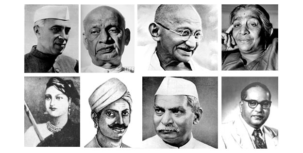

History of India
The history of India is one of the grand epics of world history and can be best described in the words of India's first Prime Minister Jawaharlal Nehru as "a bundle of contradictions held together by strong but invisible threads". Indian history can be characterised as a work in progress, a continuous process of reinvention that can eventually prove elusive for those seeking to grasp its essential character. The history of this astonishing sub continent dates back to almost 75000 years ago with the evidence of human activity of Homo sapiens. Indian history begins with the birth of the Indus Valley Civilization as evident from the sites at Mohenjo-Daro, Harappa, and Lothal which were earlier a part of the Indian subcontinent. The inhabitants were known as Dravidians who later migrated to South India probably due to ecological changes. Amazingly, almost five thousand years ago, the inhabitants of the Indus Valley Civilisation had developed an urban culture based on commerce and sustained by agricultural trade. The Aryan tribes from the North West Frontier migrated into the sub continent around second millennium BC and gradually merged with the pre-existing cultures.
Mark Twain, aptly defines India, the world's archaeological gem -
"India is a cradle of human race, the birthplace of human speech, the mother of history, the grandmother of legend, and the great grandmother of tradition. Our most valuable and most instructive materials in the history of man are treasured up in India only".
India had often been overlooked, though her history and culture is just as rich as that of Mesopotamia or Egypt. Archaeological excavations in the last fifty years have brought forth India's illustrious past and have changed the world's view about one of the oldest inhabited regions on the planet. The village of Balathal (near Udaipur in Rajasthan), dates back to 4000 BCE, illustrating the antiquity of India's history. Balathal was discovered after 1962 CE and excavations began there after 1990 CE.
Following is the history of India through the Ages:
The Pre Historic Era
The Stone Age:
The Stone Age began 500,000 to 200,000 years ago and recent finds in Tamil Nadu (at C. 75000 years ago, before and after the explosion of the Toba Volcano) indicate the presence of the first anatomically humans in the area. Archaeologists have discovered up to 1.5 million years old, stone-age tools, at this prehistoric site (Attirampakkam) near Chennai. This discovery would probably change the existing notion about the earliest human ancestors being from Africa into India. Peninsular India abounds in Paleolithic sites. These are more prominently found at Pallavaram in Tamil Nadu, Hunsgi in Karnataka, Kuliana in Orissa, Didwana in Rajasthan, and Bhimbetka in Madhya Pradesh. Tools crafted by proto-humans that have been dated back to two million years have been discovered in the North-western part of the country.
The Bronze Age:
The Bronze Age in the Indian subcontinent dates back to around 3300 BCE with the early Indus Valley Civilisation. Historically part of ancient India, it is one of the world's earliest, urban civilisations, along with Mesopotamia and Ancient Egypt. Inhabitants of this era developed new techniques in metallurgy and handicraft and produced copper, bronze, lead and tin, evident from the seals and statues found such as that of the Dancing girl. Harrappa was a significant bronze-age community; statues of various deities have also been found.
Early Historic Period
Vedic Period:
The Aryans were the first to invade the country. They came out of the North in about 1500 BC and brought with them strong cultural traditions. Sanskrit, one of the most ancient languages spoken by them, was used in the first documentation of the Vedas, which date back to the 12th century BC and are believed to be oldest scriptures still in use.
The Vedas are some of the oldest extant texts, next to those in Egypt and Mesopotamia. The Vedic era in the subcontinent lasted from about 1500-500 BCE, laying down the foundation of Hinduism and other cultural dimensions of early Indian society. The Aryans laid down Vedic civilisation all over North India, particularly in the Gangetic Plain. Society was divided into four 'Varnas' or classes popularly known as `the caste system' comprising of the 'Brahmana' or priests and scholars at the top, the 'Kshatriya' or the warriors came next, then the 'Vaishya' which included farmers and merchants, and the Shudra or labourers. The 'Dalits' who handled meat and waste were considered the untouchables and formed the lowest caste.
To start with, this caste system was merely a reflection of one's occupation but, in time, it became more rigid and was determined by one's birth. Changing the caste or marrying into a caste other than one's own was not allowed.
Mahajanapadas:
This period saw the second major rise in urbanisation in India after the Indus valley Civilisation. The word "maha" means great and the word "janapada" means foothold of a tribe. In the later Vedic Age, a number of small kingdoms or city states had mushroomed across the subcontinent and also find mention in early Buddhist and Jain literature as far back as 1000 BCE. By 500 BCE, sixteen territorial states, "monarchies and republics" or Mahajanapadas has had come to be established, namely; Kasi, Kosala, Anga, Magadha, Vajji (or Vriji), Malla, Chedi, Vatsa (or Vamsa), Kuru, Panchala, Matsya, Surasena, Assaka, Avanti, Gandhara, and Kamboja.
Persian and Greek Conquests:
Much of the Northwest subcontinent (currently Afghanistan and Pakistan) came under the rule of the Persian Achaemenid Empire in C. 520 BCE under the rule of Darius the Great and remained so for two centuries. In 326 BCE, Alexander the Great conquered Asia Minor and the Achaemenid Empire, when he reached the Northwest frontier of the Indian subcontinent he defeated King Porus and conquered most of Punjab.
Maurya Empire:
The Maurya Empire, ruled by the Mauryan Dynasty from 322-185 BCE was a geographically extensive and mighty political and military empire in ancient India, established in the subcontinent by Chandragupta Maurya in Magadha (present-day Bihar) it further thrived under Ashoka the Great. At its pinnacle, the empire covered parts of modern day Iran and almost the entire Indian subcontinent, except the southern peninsular tip.

Ancient India Timeline
Prehistoric Period: ( 400000 BC - 1000 BC ): The period when man, basically a food gatherer, discovered fire and wheel.
Indus Valley Civilisation: (2500 BC - 1500 BC): Derived its name from the river Indus and thrived on agriculture and worshipped natural forces.
Epic Age: (1000 BC - 600 BC): The period saw the compilation of the Vedas, distinction of Varnas in terms of Aryans and Dasas (slaves).
Hinduism and Transition: (600 BC - 322 BC): As caste system became more rigid, the period saw the advent of Mahavira and Buddha who rebelled against casteism. Mahajanapadas were formed - Magadha under Bimbisara and Ajat Shatru and Shisunanga and Nanda dynasty.
The Mauryan Age: (322 BC - 185 BC): Founded by Chandragupta Maurya, the empire encompassed the entire North India and Bindusara further extended it. After fighting the Kalinga war, Ashoka embraced Buddhism.
The Invasions: (185 BC - 320 AD): The period saw the invasion of Bactrians, Parthians, Shakas & Kushans, opening of Central Asia for trade, issuance of GOLD coins and introduction of the Saka era.
Deccan and South India: (65 BC - 250 AD): The southern part was ruled by Cholas, Cheras and Pandyas This period is known for construction of Ajanta and Ellora cave temples, Sangam literature, and arrival of Christianity to India.
The Gupta Dynasty: (320 AD - 520 AD): The Gupta dynasty founded by Chandragupta I, ushered in classical age in north India with Samudragupta extending his kingdom and Chandragupta II fighting against Shakas.
Shakuntalam and Kamasutra were written during this period, Aryabhatta achieved feats in Astronomy and Bhakti cult emerged.
Age of Small Kingdoms: (500 AD - 606 AD): The period saw migrations from Central Asia and Iran as Hunas moved to north India. There was rise of many small kingdoms as the North was divided into warring kingdoms.
Harshavardhana: (606 AD - 647 AD): The famous Chinese traveller Hieun Tsang visited India during Emperor Harshawardhana's reign. But his kingdom disintegrated into small states even as Hunas invaded. It was a period when the Deccan and the south became powerful.
The Southern Kingdoms: (500 AD - 750 AD): Empire of Chalukyas, Pallavas & Pandya flourished. Zoroastrians (Parsis) came to India.
Chola Empire: (9th Cent. AD - 13th Cent. AD): Founded by Vijayalaya, the Chola empire adopted a maritime policy. Temples became cultural and social centres and Dravadian languages flourished.
The Northern Kingdoms: (750 AD - 1206 AD): The Rashtrakutas became powerful, Pratiharas ruled in Avanti and Palas ruled Bengal. The period also saw emergence of Rajput clans.
Temples at Khajuraho, Kanchipuram, Puri were built and miniature painting started. The period witnessed invasion from the Turks.
Battles that have shaped the History of India:
In the long march of centuries, India has witnessed the rise and fall of several empires and conquerors. The political map of pre-modern India, before the British arrived, was made up of countless kingdoms with fluctuating boundaries that rendered the country vulnerable to foreign invasions. There have been various dynasties fighting battles among themselves and against foreign invaders - Aryans, Persians, Greeks, Chinese nomads, Arabs, Mughals, French, Dutch, Portuguese, British and others. Wave after wave of foreign aggressors descended on India, founded empires and left a deep imprint on the history and culture of the country. But none could subdue or subjugate the indomitable soul of Bharatvarsh. (According to the religious/historical texts written down in the 5th century CE, the 'Puranas', king Bharata conquered the whole sub-continent of India and ruled the land in peace and harmony. The land was, therefore, known as Bharatavarsha (`the sub-continent of Bharata').
As history is a great educator, it would be interesting to recapitulate some of the major battles that have marked turning points in the history of India:
Battle of Buxar
Seleucid-Mauryan War
Kalinga War
Battle of Haldighati
Rohilla War
Battle of the Hydaspes
Huna Invasions of India
Nadir Shah's Invasion of India
Timur invades India
Anglo-Maratha
Wars
Sakas Invade India
First Turkish Invasion of The Deccan
Mahmud Ghazni's Invasions of India
Anglo-Sikh War
Siege of Pondicherry
Invasions of Muhammad Ghori
Arab Invasion of Sind under Mohammed-bin-Qasim
Fourth Anglo-Mysore War
The Mughal Empire:
In 1526, Babur, a descendant of Timur and Gengis Kahn from Fergana Valler (present-day Uzbekistan) swept across the Khyber Pass and established the Mughal Empire which covered modern-day Afghanistan, Pakistan, India and Bangladesh. The Mughal dynasty ruled most of the Indian subcontinent till 1600; after which it went into decline after 1707 and was finally defeated during India's first war of Independence in 1857.
Family Tree of Mughals:Colonial Era:
From the 16th century, European powers from Portugal, Netherlands, France and the United Kingdom established trading posts in India. Later, they took advantage of internal conflicts and established colonies in the country.
The British Rule:
The British Rule in India began with the coming of the British East India Company in 1600 leading to the rule of Queen Victoria. It culminated in the First War of Indian Independence in 1857.
The Indian Independence Movement and Mahatma Gandhi:
In the 20th century Mahatma Gandhi led millions of people in a national campaign of non-violent civil disobedience to obtain independence from the British in 1947.
Leaders of Freedom Struggle
Independence and Partition:
Religious tension between the Hindus and Muslims had been brewing over the years, especially in provinces like Punjab and West Bengal, accentuated by the British policy of divide and rule. All through this Mahatma Gandhi called for unity among the two religious groups. The British, whose economy had been weakened after World War-II, decided to leave India and paved the way for the formation of an interim government. Eventually, the British Indian territories gained independence in 1947, after being partitioned into the Union of India and the Dominion of Pakistan.
Post-Independence Period:
As many civilizations the Greek, the Roman, and the Egyptian - rose and fell, leaving only ruins, the Indian civilisation and culture remained unscathed. Even wave after wave of invaders descended on the country, founded empires and ruled over its different parts, the indomitable soul of Bharatvarsh could not be subjugated.
Today, India marches proudly as the most vibrant republic and largest democracy of the world, an influential nation in South Asia and an emerging global superpower.
India is the second largest country in Asia and the seventh largest and second most populous country on Earth. It comprises as much as one third of Asia and supports one seventh of humanity.